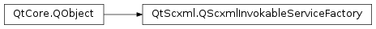

QScxmlInvokableServiceFactory¶
Inherited by: QScxmlStaticScxmlServiceFactory, QScxmlDynamicScxmlServiceFactory
Synopsis¶
Functions¶
- def
invokeInfo() - def
names() - def
parameters()
Detailed Description¶
The
PySide2.QtScxml.QScxmlInvokableServiceFactoryclass creates invokable service instances.Each service instance represents an
<invoke>element in the SCXML document. Each time the service is actually invoked, a new instance ofPySide2.QtScxml.QScxmlInvokableServiceis created.
-
class
PySide2.QtScxml.QScxmlInvokableServiceFactory(invokeInfo, names, parameters[, parent=nullptr])¶ Parameters: - invokeInfo –
PySide2.QtScxml.QScxmlExecutableContent::InvokeInfo - names –
- parameters –
- parent –
PySide2.QtCore.QObject
- invokeInfo –
-
PySide2.QtScxml.QScxmlInvokableServiceFactory.invoke(parentStateMachine)¶ Parameters: parentStateMachine – PySide2.QtScxml.QScxmlStateMachineReturn type: PySide2.QtScxml.QScxmlInvokableServiceInvokes the service with the parameters given in the constructor, passing
parentStateMachineas the parent. Returns the new invokable service.
-
PySide2.QtScxml.QScxmlInvokableServiceFactory.invokeInfo()¶ Return type: PySide2.QtScxml.QScxmlExecutableContent::InvokeInfo
-
PySide2.QtScxml.QScxmlInvokableServiceFactory.names()¶ Return type:
-
PySide2.QtScxml.QScxmlInvokableServiceFactory.parameters()¶ Return type:
© 2018 The Qt Company Ltd. Documentation contributions included herein are the copyrights of their respective owners. The documentation provided herein is licensed under the terms of the GNU Free Documentation License version 1.3 as published by the Free Software Foundation. Qt and respective logos are trademarks of The Qt Company Ltd. in Finland and/or other countries worldwide. All other trademarks are property of their respective owners.